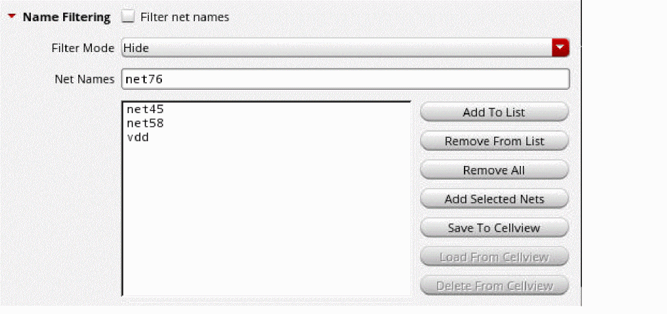

Setting the Net Name Display Options
By default, net name labels are displayed in the layout canvas. You can turn off the display, if required, by deselecting the Display net name labels option in the Net Name Display Options form. Or, by setting the netNameDisplayEnabled environment variable to nil.
To specify the net name display:
-
Choose the appropriate options for displaying the labels.
Choose whether you want the labels to be displayed on top of the shape and if you want the labels to be drawn with a background to make them more prominent. - Choose a color for the label, or choose to display the label in the same color as the shape.
- (Optional) Choose whether you want to display labels on vias, or skip them. By default, labels are displayed on vias.
- (Optional) Select the Filter net names option to enable the name filtering functionality that allows you to selectively display or hide the net name labels for the specified nets.
-
Set the Filter Mode to Show or Hide.
Environment variable: netNameDisplayFilterMode -
(Optional) In the Net Names field, type the names of the nets for which the name filtering needs to be applied and click Add To List, as illustrated in the figure below.
- The Net Names field is case-sensitive.
- You can type in multiple net names in the Net Names field and add them to the list in one go, but, keep the net names space-separated.
-
Alternatively, you can specify the net names to be filtered by selecting the nets in the Navigator assistant or the layout canvas and clicking the Add Selected Nets button.
See Adding Selected Nets. - You can provide a default net name list to be used by using the netNameDisplayFilterDefaultList environment variable.
- (Optional) To remove net names from an already existing filter list, select the net name and click Remove From List.
-
(Optional) Click Save To Cellview to save the current filtering options to the cellview such that the same settings can be reloaded later when the cellview is opened in a different window.
- The Save To Cellview option is enabled only when the current cellview is editable.
- To revert to the filtering options previously saved for the cellview, click the Reload From Cellview button. This option is enabled only when some design information is saved.
-
To delete the existing filter settings saved in the cellview, click the Delete From Cellview
button.
See Saving To Cellview.
Adding Selected Nets
Add Selected Nets lets you add nets to the filter list by selecting the nets in the Navigator assistant or from the layout canvas. This option can be used when a large number of nets need to be added to the filter list.
To add selected nets to the filter list:
-
Select the nets from the Navigator assistant or the canvas and click Add Selected Nets.
Alternatively, when the Routing Object Granularity option on the Selection Options form is set to Net, you can hover the mouse over a shape in the layout canvas and choose Select – Net from the shortcut menu. Then, clicking the Add Selected Nets option in the Net Name Display Options form adds the selected net (or nets) to the filter list.
When the number of nets to be added to the filter list is small, it might be quicker to type in the net names in the Net Names field and click Add To List.
Saving To Cellview
Save To Cellview lets you save the current filtering options to the cellview that you can reload later in a different window. Any edits that you make after the save cannot be reloaded.
Example
Let us consider a scenario that illustrates the use of the Save To Cellview and Reload From Cellview options.
Let us assume that you start with a clean filter list when you launch Virtuoso. As you edit the layout, you add the nets VDD and VSS to the filter list and click Save To Cellview. You have now saved the current filter list to the cellview.
If you were to now also add net VDD2 to the filter list, you will have a filter list that displays all the three nets—VDD, VSS, and VDD2. But, your saved list will still only have nets VDD and VSS. Therefore, if you choose to revert to the saved list by clicking Reload From Cellview, the filter list in the form will be updated to display only VDD and VSS.
Related Topics
Return to top